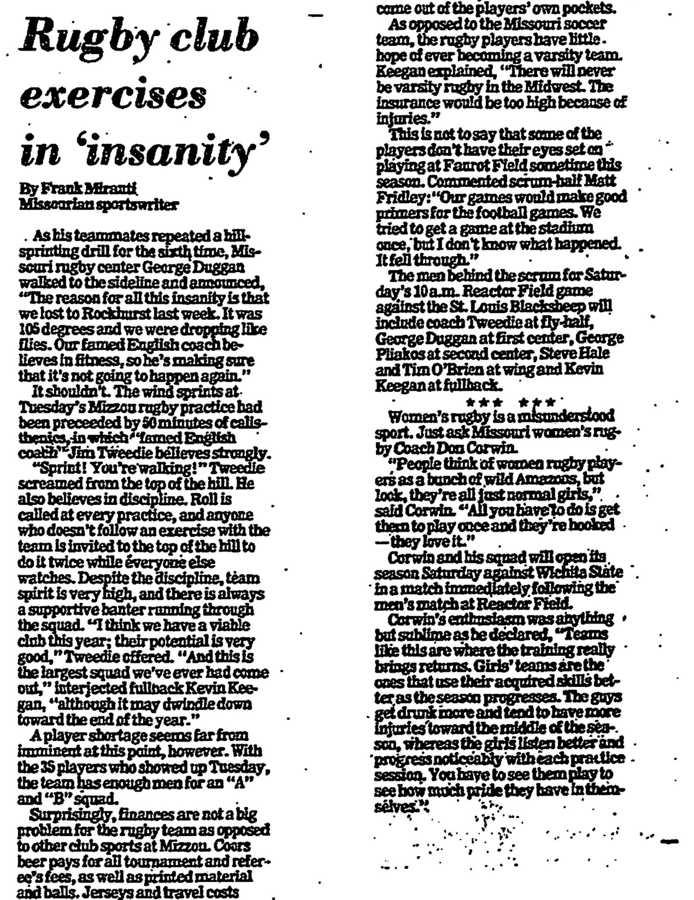

Mizzou Rugby Season Archive
Fall 1979: record unknown · Early-season loss to Rockhurst
A new English coach, the largest squad the club had seen, and fifty minutes of calisthenics before the running started.
The fall began badly, and the club was made to pay for it. Missouri had lost to Rockhurst in 105-degree heat, and by the following Tuesday’s practice the reckoning was under way. As his teammates repeated a hill-sprinting drill for the sixth time, center George Duggan walked to the sideline and explained himself to a Columbia Missourian reporter. “The reason for all this insanity is that we lost to Rockhurst last week,” he said. “It was 105 degrees and we were dropping like flies. Our famed English coach believes in fitness, so he’s making sure that it’s not going to happen again.”
The famed English coach was Jim Tweedie, and the wind sprints had been preceded by fifty minutes of calisthenics. “Sprint! You’re walking!” he screamed from the top of the hill. Tweedie believed in discipline as firmly as he believed in fitness: roll was called at every practice, and anyone who failed to follow an exercise with the team was invited to the top of the hill to do it twice while everyone else watched. Despite it all the reporter found team spirit very high, with a supportive banter running through the squad. “I think we have a viable club this year; their potential is very good,” Tweedie offered.
“And this is the largest squad we’ve ever had come out,” fullback Kevin Keegan interjected, “although it may dwindle down toward the end of the year.” Thirty-five players had turned out that Tuesday — enough men for an “A” and a “B” squad, and a player shortage nowhere in sight.
Money, unusually for a club sport at Mizzou, was not the problem. Coors beer paid for all tournament and referee’s fees as well as printed material and balls; jerseys and travel costs came out of the players’ own pockets. Varsity status was a different question. Unlike the Missouri soccer team, the ruggers had little hope of it. “There will never be varsity rugby in the Midwest,” Keegan explained. “The insurance would be too high because of injuries.” Faurot Field was the more modest ambition, and one the club had already chased once. “Our games would make good primers for the football games,” scrum-half Matt Fridley commented. “We tried to get a game at the stadium once, but I don’t know what happened. It fell through.”
That Saturday brought a 10 a.m. kickoff against the St. Louis Blacksheep at Reactor Field. The men behind the scrum were Tweedie himself at fly-half, George Duggan at first center, George Pliakos at second center, Steve Hale and Tim O’Brien at wing, and Keegan at fullback.
The same morning carried a second match. Missouri’s women’s side, coached by Don Corwin, opened its season against Wichita State immediately after the men had finished. “People think of women rugby players as a bunch of wild Amazons, but look, they’re all just normal girls,” Corwin said. “All you have to do is get them to play once and they’re hooked — they love it.” He rated their practice habits above the men’s, arguing that it was the women’s teams who used their acquired skills better as a season went on.

Source: “Rugby club exercises in ‘insanity’” by Frank Miranti, Columbia (Mo.) Missourian. The clipping carries no date; it was preserved and submitted by George Pliakos, who played from 1978 to 1981, and is placed in this season because Don Corwin, Steve Hale, Tim O’Brien and Pliakos all appear on this roster. If you can date it exactly, or place it in another season, please tell us below. No won-lost record for this season has reached us yet.
Players who have told us they wore the Black and Gold this season.
| Name |
|---|
| Nick Baker |
| John Camos |
| Don Corwin |
| George Duggan |
| Matt Fridley |
| Steve Hale |
| Mike Holly |
| Kevin Keegan |
| Nicholas "Nick" Klaus |
| Glen McMurry Jr |
| Tim O’Brien |
| George Pliakos |
| Bill Strohmeyer |
| Jim Tweedie (Coach) |
| Alex Waigandt |
This roster comes from alumni submissions and is not yet complete. Missing a teammate? Use the form below.
“The reason for all this insanity is that we lost to Rockhurst last week. It was 105 degrees and we were dropping like flies. Our famed English coach believes in fitness, so he’s making sure that it’s not going to happen again.”
Center George Duggan, at the sixth repeat of a hill-sprinting drill. Columbia Missourian, undated clipping
“I think we have a viable club this year; their potential is very good.”
Coach Jim Tweedie. Columbia Missourian, undated clipping
“And this is the largest squad we’ve ever had come out, although it may dwindle down toward the end of the year.”
Fullback Kevin Keegan. Columbia Missourian, undated clipping
“Our games would make good primers for the football games. We tried to get a game at the stadium once, but I don’t know what happened. It fell through.”
Scrum-half Matt Fridley, on the club’s hopes of playing at Faurot Field. Columbia Missourian, undated clipping
“People think of women rugby players as a bunch of wild Amazons, but look, they’re all just normal girls. All you have to do is get them to play once and they’re hooked — they love it.”
Don Corwin, coaching the Missouri women’s side. Columbia Missourian, undated clipping
Have a story from this season? Share it below.
Roster info, season records, photos, stories — every detail helps.